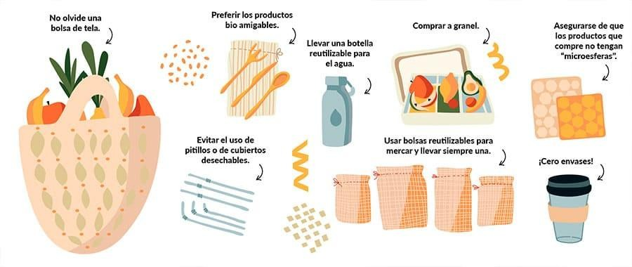

Reducir
Disminuir el consumo innecesario, especialmente de plásticos y desechables.
- Usar bolsas reutilizables.
- Evitar pajillas y cubiertos desechables.
- Llevar termo o botella reutilizable.
- Comprar productos con menos empaque.
Ejemplo local: pupuserías que usan bolsas de papel o recipientes biodegradables.